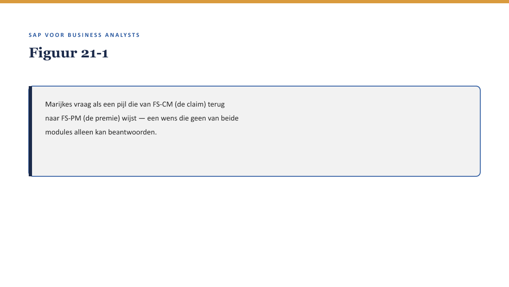
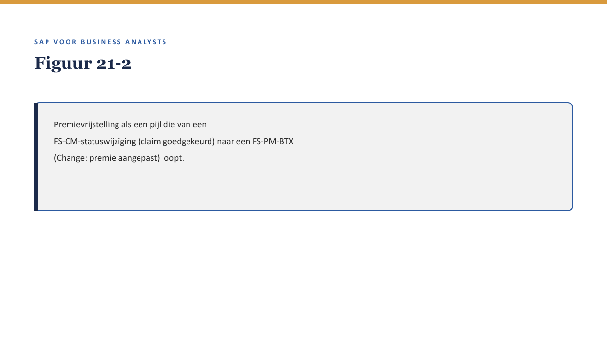

Deel 21 — Ketenintegratie: polis, claim en financiën samen
Reader · Niveau 2 Professional · Cursus SAP voor Business Analysts · Ductus
Leerdoelen
Na dit deel kun je:
- minstens drie plekken benoemen waar FS-PM en FS-CM elkaar structureel raken, naast dekkingsbeoordeling;
- het voorbeeld premievrijstelling-na-schade uitleggen als illustratie van een cross-modulebedrijfsregel;
- de tweede IFRS17/FPSL-lens toepassen: wat verandert er in de rapportagevraag van de business, niet alleen in de boeking;
- beoordelen wanneer een wens eigenlijk een ketenintegratie-wens is, ook als hij zich voordoet als een FS-PM- of FS-CM-wens afzonderlijk;
- de casus voorbereiden op de capstone van niveau 2 (deel 22).
Studielast: één dagdeel klassikaal, circa drie uur zelfstudie.
1. Een wens die niet in één module past
Marijke stelt een schijnbaar simpele vraag: “Als iemand een beroep doet op arbeidsongeschiktheidsdekking, moet de premie voor die polis dan niet automatisch worden opgeschort?” Priya en Youssef kijken elkaar aan — dit is geen FS-PM-vraag en geen FS-CM-vraag afzonderlijk, het is een vraag die precies op de naad tussen beide ligt.

2. Waarom dit voor de BA telt
Waarom dit voor de BA telt. Deel 19 en 20 behandelden FS-PM en FS-CM elk als eigen keten. In de praktijk zijn dat geen twee gescheiden werelden: veel van de interessantste (en risicovolste) bedrijfsregels leven precies op het raakvlak. Een BA die alleen binnen één module denkt, mist deze regels systematisch.
3. Premievrijstelling na schade: een cross-modulebedrijfsregel
Premievrijstelling is een voorbeeld van een regel die bij een specifieke FS-CM-gebeurtenis (een goedgekeurde arbeidsongeschiktheidsclaim) een FS-PM-actie triggert (een premie-aanpassing op de polis). Dit vergt dat beide modules met elkaar communiceren op een moment dat niet in de losse ketens van deel 19 of 20 als zodanig was voorzien.

Kernzin — Een cross-modulebedrijfsregel is niet zomaar een grotere versie van een gewone bedrijfsregel (↗ deel 5-6, niveau 1) — hij vergt dat je de trigger in de ene module herkent én weet welke actie dit in de andere module hoort te veroorzaken. Beide kanten moeten expliciet worden vastgelegd.
4. Andere plekken waar FS-PM en FS-CM elkaar raken
Naast premievrijstelling zijn er meer voorbeelden die een BA zou moeten herkennen als potentiële cross-modulewensen:
- Claim-limiet gebaseerd op polishistorie — hoeveel eerdere claims zijn er op deze polis geweest, en beïnvloedt dat de beoordeling van een nieuwe claim?
- Polisbeëindiging met een openstaande claim — wat gebeurt er met een lopende claim als de onderliggende polis wordt beëindigd (Termination, ↗ deel 11)?
- Regres en premieaanpassing — als regres (↗ deel 14 §4) succesvol is, heeft dat dan een terugwerkend effect op de polis?
5. Tweede IFRS17/FPSL-lens: de rapportagevraag
Vervolg op de eerste lens uit deel 15 §6 (wat verandert er in de boeking).
Naast de boekingsimplicatie heeft elke cross-modulegebeurtenis ook een rapportagevraag-implicatie: verandert wat finance en de toezichthouder-achtige rollen (↗ testcursus-dossier, Willemien van Ballegooijen) willen zien, doordat FS-PM en FS-CM nu op elkaar inspelen? Premievrijstelling bijvoorbeeld raakt niet alleen een boeking, maar ook de vraag hoe de “verwachte toekomstige premie-inkomsten” van een polis worden gerapporteerd zodra die premie tijdelijk wordt opgeschort.
Kernzin — De eerste IFRS17/FPSL-lens vroeg: wat betekent dit voor de boeking? De tweede lens voegt toe: wat betekent dit voor wat de business en de toezichthouder willen weten? Beide vragen horen bij elke cross-modulewens gesteld te worden, niet alleen bij losse FS-PM- of FS-CM-wensen.
6. Wanneer is een wens eigenlijk een ketenintegratie-wens?
Een vuistregel: als het antwoord op een wens begint met “dat hangt af van wat er in de andere module gebeurt,” is de wens waarschijnlijk een ketenintegratie-wens, ook al werd hij aanvankelijk als een gewone FS-PM- of FS-CM-vraag gesteld. Herken dit vroeg — een fit-gap-analyse die een cross-moduleaspect mist, levert een onvolledige inschatting op.
7. Voorbereiding op de capstone
Deel 22 vraagt om een volledig procesontwerp (BTX + claim) voor een nieuw Meridiaan-product. Neem de voorbeelden uit §4 mee als checklist: bij het ontwerpen van een nieuw product, is er een premievrijstellingsachtige regel nodig, een claim-limiet-koppeling, of een polisbeëindiging-met-openstaande-claim-scenario om rekening mee te houden?
8. Kruisverwijzingen
- ↗ Deel 19-20: de losse ketens die dit deel samenbrengt.
- ↗ Deel 15 §6: eerste IFRS17/FPSL-lens.
- ↗ Deel 27, niveau 3: samenvattend IFRS17/FPSL-deel, beide lenzen samen.
Kernbegrippen
cross-modulebedrijfsregel · premievrijstelling · rapportagevraag-implicatie
Samenvatting in vijf zinnen
- FS-PM en FS-CM raken elkaar op meerdere plekken naast dekkingsbeoordeling — premievrijstelling is het scherpste voorbeeld.
- Een cross-modulebedrijfsregel vergt dat de trigger in de ene module én de bijbehorende actie in de andere module beide expliciet worden vastgelegd.
- De tweede IFRS17/FPSL-lens vraagt: wat verandert er in de rapportagevraag van de business en toezichthouders?
- Een vuistregel om een ketenintegratie-wens te herkennen: “dat hangt af van wat er in de andere module gebeurt.”
- De capstone in deel 22 vergt bewustzijn van deze cross-moduleaspecten bij het ontwerpen van een nieuw product.